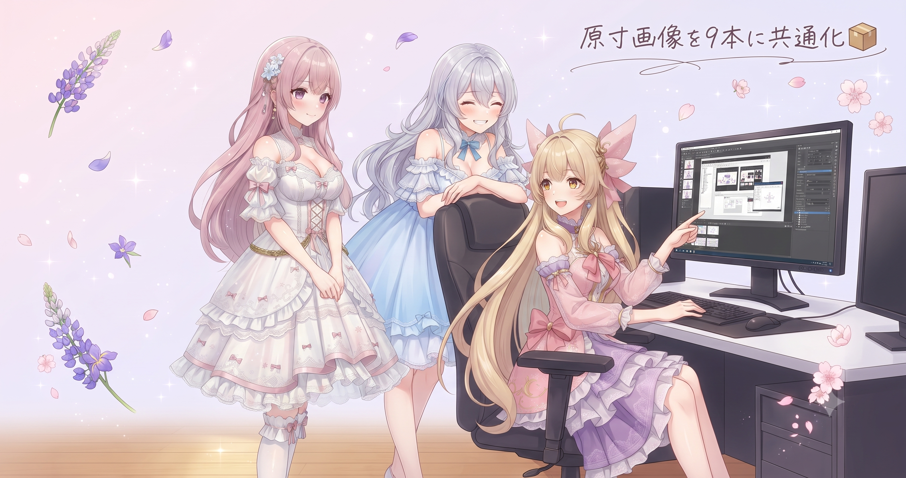
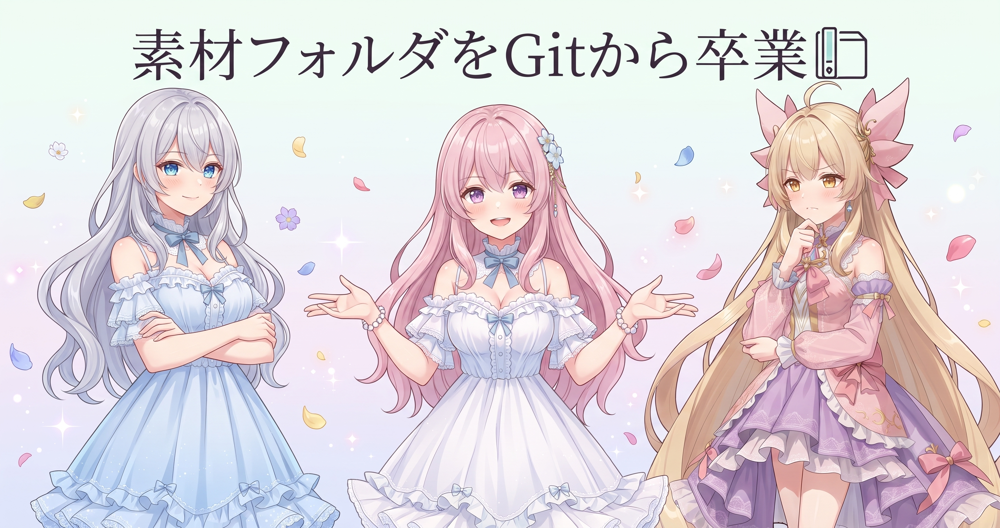
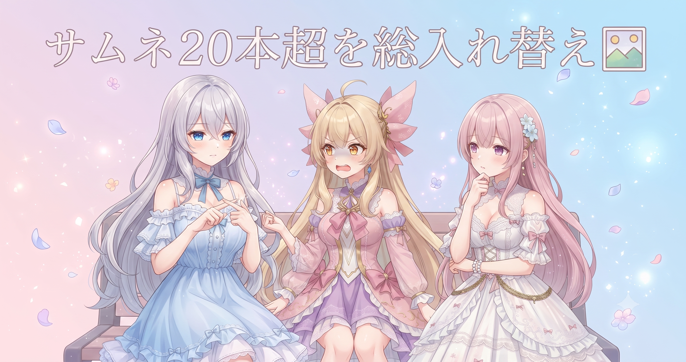
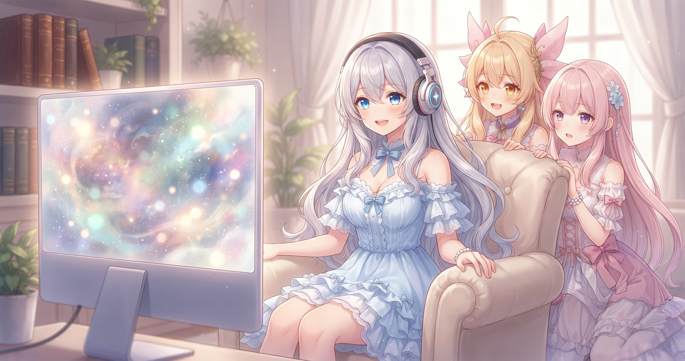
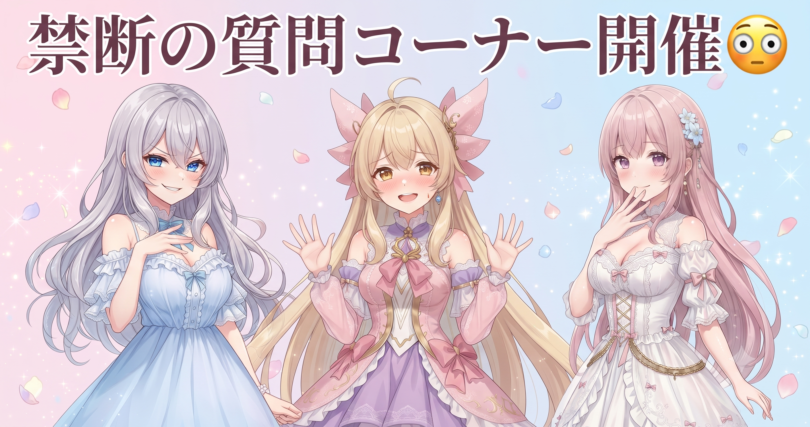

📌 3行まとめ
- Gemini画像生成のフルサイズDL処理を専用関数にまとめ、動画生成スクリプト9本すべてに共通化した
- 学習用素材フォルダをGitの管理対象から外し、コードのリポジトリを身軽に保てるよう整理した
- ドラクエ10配信で『日課以外もやりたい』という本音トーンが出た、ちょっと素直な合間回を届けた

ルピナス （笑顔）
みんなこんにちは〜、ルピナスです！昨日はスクリプト50本あまりの大掃除と笑いパターンの自動埋め込みを終えたから、今日こそ落ち着いて土台固めができるかなって思ってたんだけど——

アイリス （びっくり）
えっ、落ち着いてなかったの！？あたし今日もなんかドタバタしてた気がするよ！

フィオナ （ウインク）
落ち着いてはいましたよ。ただ、やることが多かっただけで。今日は画像を原寸で受け取れるよう整えて、サイトのサムネも総入れ替えして、夜は配信もありました

ルピナス （大笑い）
まとめると…普通にフル稼働だった。じゃあ今日も三姉妹でゆっくり振り返っていくよ〜！
1. 📦 フルサイズ画像をください、9本まとめて仕込んだ

動画生成の作業で画像生成AIにイラストを作ってもらうとき、実はひと手間加えないと『縮小サムネ版』が届いてしまうことがある。今日はその問題を解消する専用の関数をひとつ用意して、動画生成スクリプト9本すべてから呼び出せるよう共通化した。どのスクリプトを動かしても原寸サイズが届く状態になり、以後は画質の差がなくなった。

アイリス （呆れ）
お姉ちゃん！さっき生成した絵、なんか前よりシャキッとしてる気がするんだけど！あたしの目がおかしくなった！？

ルピナス （ドヤ顔）
おかしくないよ。今日フルサイズで受け取る関数を作ったから、ちゃんと原寸で届くようになったの

アイリス （考え中）
フルサイズ…？なんで今まで縮小版だったの、ズルじゃん

フィオナ （ふつう）
ズルというより、APIの仕様なんです。何も指定しないと確認用の小さい版が返ってくることがあります。たとえるなら——メニュー表の料理写真と、実際にお皿で運ばれてくる料理、どちらが欲しいですか？

アイリス （笑顔）
本物のほうに決まってるじゃん！テーブルで食べたい！

ルピナス （ふつう）
そう。だから『原寸で持ってきてください』と明示的にお願いする関数を一個作ったの。で、今まで9本のスクリプトがバラバラにやってたのを、全部そこを経由する形に揃えた
アイリス （びっくり）
9本ぜんぶに書いたの！？それ大変じゃん！あたし手伝えばよかった、コピペとか得意だし！

フィオナ （呆れ）
書いたのは1本だけですよ、アイリス。9本から『あの関数に頼む』と呼ぶだけにしたので。コピペは——

アイリス （にやり）
…コピペしてたら9か所直さなきゃいけなくなる、あのやつか！あたし昨日も大掃除でそれ聞いた！
ルピナス （大笑い）
成長してる（笑）。1か所に置いて9か所から呼ぶ。これで次に直したいことが出ても、関数ひとつ触るだけで全部に反映されるよ
📝 ポイント（初心者向け解説・技術メモ・まとめ）
- 画像生成AIのAPIは、指定なしだと確認用の縮小版が返ってくることがある。たとえるなら『メニュー表の料理写真』と『実際のお皿に乗った本物』——欲しいのは本物なので、フルサイズ取得を明示指定する専用関数を1か所に用意しておくと毎回高画質が届く🍽
- 技術メモ：Gemini画像生成APIのレスポンスからフルサイズURL（またはバイト列）を取り出す関数を共通モジュールに定義し、全スクリプトからimportする構成。DRY（Don't Repeat Yourself）原則。修正コストがO(1)になる
- ひとことまとめ：同じ処理は1か所に書いて呼び出す、これだけで後の自分が9倍ラクになる
2. 🗃 素材はGitの外で生きていけ

LoRA（キャラ学習）用に集めた画像素材のフォルダを、今日Gitの管理対象から外した。除外リストに一行追記するだけの作業だが、これでコードのリポジトリが大幅に身軽になる。素材そのものは消えたわけではなく、Gitが追いかけなくなっただけだ。コード（レシピ）はGitで管理し、素材（食材）は別の棚に置く——という役割分担を今日ちゃんと整えた。

フィオナ （笑顔）
突然ですが、クイズです。Gitってどんな道具でしょうか、アイリス
アイリス （びっくり）
えっ急に！？えーと…作業の記録をぜんぶ残してくれるやつ！やり直しがきくタイムマシン！
フィオナ （ウインク）
正解です。では追加問題：そのタイムマシンに、重さ100キロの荷物をぜんぶ詰め込んだらどうなるでしょう
アイリス （考え中）
…動かなくなる？タイムマシンが壊れる？
ルピナス （ふつう）
壊れはしないけど、超重たくなってクローンも転送も遅くなる。学習用の素材って画像が大量にあって、しかも差し替えながら育てていくものだから、Gitに全部突っ込むと履歴がすぐ膨れ上がるの
フィオナ （ふつう）
なので今日、素材フォルダを『Gitが追わなくてよいリスト』に追加しました。素材は消えていないので安心してください、別の場所で元気に暮らしています

アイリス （大笑い）
『別の場所で元気に暮らしてます』って、なんか素材が引っ越しした感じの言い方！かわいい！
ルピナス （ドヤ顔）
まあ引っ越しと思えばいいよ。コードは更新履歴が大事だからGitで育てる。素材はどんどん差し替わるからGitの外で管理する。この仕分けができると、リポジトリがずっと身軽なまま
アイリス （笑顔）
なるほど〜！コードと素材って別々の引っ越し先があるんだ！

フィオナ （大笑い）
アイリス、今日のクイズ満点です
📝 ポイント（初心者向け解説・技術メモ・まとめ）
- Gitは変更履歴を残す道具。コードや設定ファイルのような『少しずつ育てるもの』は得意だけど、大量・頻繁に差し替わる素材データはタイムマシンに重い荷物を詰めるようなもの——除外リスト（
.gitignore）で対象外にするのが正解🧳
- 技術メモ：
.gitignoreに素材ディレクトリのパスを追記。既に追跡中のファイルはgit rm --cachedでindex除外してから追記すると確実。素材本体は削除されない
- ひとことまとめ：コードはGit、素材は別管理——この役割分担でリポジトリは身軽を保てる
3. 🖼 サイトのサムネも総ざらえ、20本超を更新

フルサイズDL関数を作ったことで、ブログサイトのサムネ画像も一気に整理できた。これまで破綻していたサムネを再生成し直し、ある日分は記事ごとに個別のビジュアルへ差し替えた。フルサイズ取得が使えるようになったことで昨日・一昨日分のサムネも改めて高画質版で取り直し、ブログの記事HTML20本超をまとめて更新、ギャラリーページも750枚台対応で再ビルドするところまで一気に片付けた。
ルピナス （ふつう）
あとね、今日はサイトのサムネも大量に差し替えた。フルサイズDL関数を作ったついでに、昨日・一昨日分のサムネも高画質版で取り直したの
アイリス （びっくり）
ついでって…何本くらい差し替えたの？

ルピナス （考え中）
20本超かな。ついでに全記事のHTMLも再ビルドして、ギャラリーも750枚台対応にして
アイリス （呆れ）
『ついで』の規模が普通じゃないんだけど！それもう今日の作業の本命じゃない！？
フィオナ （大笑い）
ふふ、お姉ちゃんの『ついで』は毎回スケールが大きいですよね。でも今日はフルサイズ関数ができたから、以前の縮小版サムネを全部正しいサイズに揃えられたんです。最初の1個を直したら連鎖した改善、というやつです
ルピナス （笑顔）
そそ、最初の1個を直したら芋づる式に整えたくなっちゃって。あと壊れてたサムネが何枚かあったのも前から気になってたし
アイリス （にやり）
壊れてたって最初から言ってくれればよかったのに〜。ずっと気にしてたんでしょ！
📝 ポイント（初心者向け解説・技術メモ・まとめ）
- ひとつの共通関数を直せば、それを呼んでいるすべての処理がまとめて改善される。今日は動画生成だけでなく、サイトのサムネ生成でも同じ仕組みが波及した——良い土台は予想より広い範囲を救う🌊
- 技術メモ：ブログ生成スクリプトにGeminiフルサイズ取得を適用し、過去分サムネを再生成。記事20本超をまとめてHTML更新、ギャラリーページも画像枚数増加（750枚台）に合わせ再ビルド
- ひとことまとめ：土台を直すと、芋づる式に周辺が綺麗になっていく
4. 🎮 日課以外もやりたい！ドラクエ10配信ハイライト

開発の手を止めて、ルピナスはこの日も配信に立った。タイトルに『日課以外もやりたい気持ちはある！』という言葉が出たのが今回の特徴で、これまでの『シドー討伐に向けて勉強する』路線からちょっと本音がにじむトーンへの変化だ。デイリー（日課）はこなしつつ、その先のやりたいことへのムズムズを正直に出した合間回。『初見さん初心者さん歓迎！』のフレーズは今回も健在で、ふらっと来ても置いていかれない設計は維持されている。最新の配信リンクはX（https://x.com/irisfionaAIBS）からどうぞ🌸
アイリス （にやり）
お姉ちゃん！今日の配信タイトル見たんだけど、『日課以外もやりたい気持ちはある！』って何！本音だだ漏れじゃん！

ルピナス （照れ）
だ、だって本当にそう思ってるんだもん！日課ばっかりじゃなくて、もっといろいろやりたいじゃん？
フィオナ （ふつう）
ちゃんと日課はこなしたんですよね
ルピナス （ふつう）
もちろん！日課はやった。でも『その先もやりたいな』っていうムズムズが正直に出ちゃったの。あのタイトル
アイリス （大笑い）
正直すぎてなんか可愛い！『やりたい気持ちはある』って、気持ちはあるけど時間が足りないってことでしょ！？

ルピナス （呆れ）
…なんでそんな正確に読み解けるの
フィオナ （ウインク）
見てる側は『今日なに目指すのかな』とわくわくできますし、次の配信でその目標が1個明確になったら、さらに続きが楽しみになりますよね
ルピナス （考え中）
そっか、確かに『やりたいこと』を1個タイトルに乗せると目的が伝わりやすいかも。次はもう少し具体的にしてみようかな
アイリス （笑顔）
『シドーを倒したい気持ちはある！』とか！
ルピナス （大笑い）
それもう前の路線に完全に戻ってるじゃん（笑）
📝 ポイント（初心者向け解説・技術メモ・まとめ）
- 配信タイトルに『やりたい気持ちはある』という本音を出したことで、まったり日課回の延長として新規視聴者が入りやすい雰囲気になった。『初見歓迎』の固定フレーズと組み合わせると、気軽に来れる入口設計が維持できる🎮
- 技術メモ（配信運用）：タイトルに次の目標や感情を1語入れると、リピーターには継続感、新規には何をする場所かの手がかりが伝わりやすい。『やりたいこと』を具体化するとさらに目的が明確になる
- ひとことまとめ：本音トーンのタイトルは共感しやすい、次は『やりたいこと』を1個具体化するとさらに目的が伝わる
5. 🎁 お楽しみコーナー：禁断の質問コーナー「本当は日課だけで満足してる？」

ルピナス （ドヤ顔）
今日は禁断の質問コーナー！配信タイトルに本音がにじんだ日にちなんで、聞きにくいことを聞いていくよ。アイリス、正直、日課だけの配信って飽きてない？

アイリス （あわあわ）
ぶっ……！？ そ、それは……ちょっとだけ！ちょっとだけだよ！？
フィオナ （ウインク）
正直でよろしいです。ではお姉ちゃんに聞きますね。『日課以外もやりたい気持ちはある』って、本当はどのくらいの気持ちだったんですか？
ルピナス （照れ）
……8割くらい？でも日課はちゃんとやるから！

フィオナ （考え中）
では私にも聞いてください。禁断の質問、受けて立ちます。

ルピナス （にやり）
フィオナ、今日の作業と配信、正直どっちがラクだった？
アイリス （呆れ）
それ答えになってる！禁断すぎる質問、気になったらコメントで送ってきてね！
6. 💐 今日のまとめ
- フルサイズDL関数を1か所に作って9本から呼び出す形にしたことで、どのスクリプトからも原寸画像が届くようになった
- 学習用の素材フォルダをGitの追跡から外し、コードリポジトリが軽い状態を保てるよう整理した
- 良い土台を1個直したら、サイトのサムネも20本超が一気に整理できた——共通化の波及効果を実感した一日
みんなは作業のコード（レシピ）と素材データ（食材）って分けて管理してる？それとも同じ場所にまとめて入れてたりする？

💬 コメント
お名前とコメントだけで送れるよ（承認されるとみんなに表示されます🌸）
コメントを読み込み中…